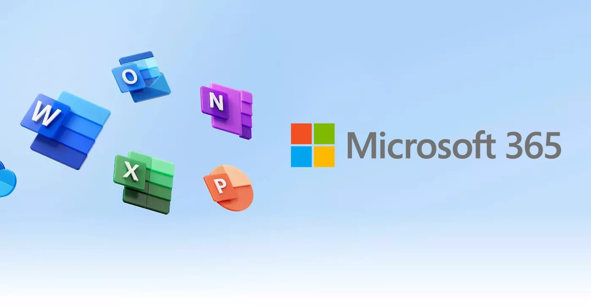
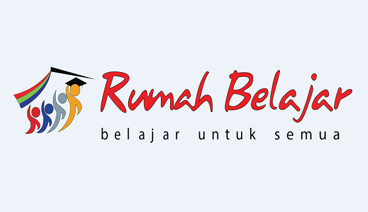
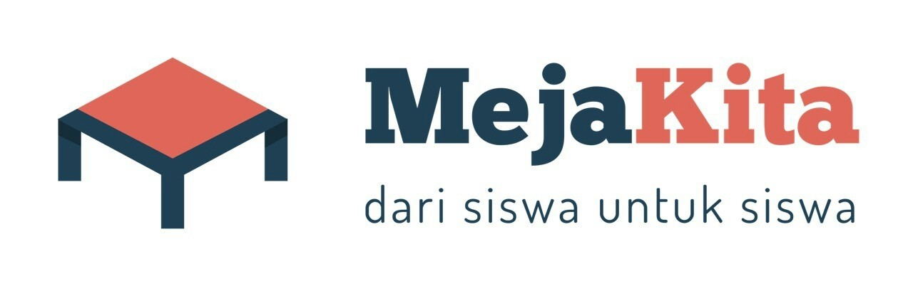
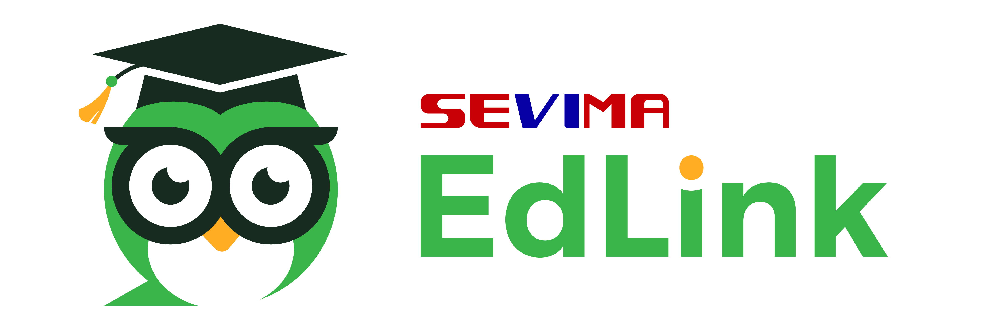

<!DOCTYPE html>
<html lang="en">
<head>
	<meta charset="UTF-8">
	<meta name="viewport" content="width=device-width, initial-scale=1.0">
	<title>pertemuan_4</title>
	<link rel="stylesheet" href="style.css">
</head>
<body>
	<div class="judul">
		<h2>PERTEMUAN 4</h2>
		<h3>KOMPUTER DAN PENDIDIKAN</h3>
	</div>
	<div class="navigation">
		<div class="prev">
			<a href="">
			<h4>Prev - Pertemuan_3</h4>
			</a>
		</div>
		<div class="next">
			<a href="">
			<h4>Next - Pertemuan_5</h4>
			</a>
		</div>
	</div>
	<div class="container">
		<h3>TUJUAN PEMBELAJARAN</h3>
		<p>Setelah mengikuti materi pada pertemuan ke-4 ini mahasiswa mampu
			mengenal berbagai macam aplikasi pendidikan yang menjadi unggulan, dan bisa 
			mengenal software-software lainnya, sesuai dengan kebutuhan dan kegunaannya.
		</p>
		<h3>URAIAN MATERI</h3>
		<p>Teknologi Informasi dan Komunikasi sudah digunakan didunia pendidikan 
			Indonesia sejak lama. Berbagai institusi pendidikan saling bersaing untuk 
			memanfaatkan teknologi seperti membangun jaringan internet, sistem 
			pembelajaran online (e-learning), infrastructure penggunaan hardware, pengadaan 
			software, dsb.
		</p>
		<p>Pendidikan yang pada awalnya bertatap muka antara siswa dengan guru 
			tentunya kemungkinan besar di masa yang akan datang akan beralih menjadi 
			bertatap layar yang kita sering sebut E-learning. Dampak E-learning terhadap 
			metode pendidikan masa yang akan datang yaitu pendidikan bersifat lebih luwes 
			(fleksibel), lebih terbuka. Materi-materi pembelajaran yang ada bisa di akses oleh 
			siapa saja. Jaringan informasi sangat menentukan arah dan bentuk pendidikan 
			masa mendatang. Pendidikan yang memungkinkan adanya interaksi, kolaborasi 
			serta tidak berorientasi pada gedung sekolah.
		</p>
		<div class="cabang-materi">
			<ol type="1">
				<li class="sub-judul">Perubahan Pola Pendidikan</li>
				<p>Memasuki abad ke-21 perubahan pada dunia pendidikan cenderung 
					terjadi, hal ini disebabkan oleh munculnya inovasi dunia pendidikan yang terus 
					berkembang. B. Uno pada tahun 2010 berkata bahwa pendidikan terutama di 
					Indonesia akan mengarah kepada hal berikut :
				</p>

				<div class="isi-materi">
				  <ol type="a">
					<li>Mulai dikembangkannya pendidikan secara terbuka, seperti saat ini 
						berlakunya kampus merdeka dalam menjalankan proses belajar mengajar. 
					</li>
					<li>Sharing resource dimana adanya kegiatan yang dilakukan bersama antara 
						lembaga pendidikan dengan sekelompok perpustakaan yang tergabung dalam sebuah jaringan yang memiliki tujuan mengurangi biaya pengembangan koleksi dan meningkatkan layanan.
					</li>
					<li>Penerapan teknologi multimedia terbaru untuk menggantikan teknologi 
						lamanya, seperti televisi atau radio.
					</li>	
				  </ol>
				</div>

				<p>Perkembangan teknologi dan informasi mempunyai pengaruh besar 
					terhadap dunia pendidikan. Perubahan pada metode pendidikan yang 
					disebabkan oleh perkembangan teknologi dan informasi misalnya metode 
					kegiatan belajar mengajar jarak jauh. Selain kegiatan belajar mengajar jarak 
					jauh, mahasiswa dapat mengecek nilai, biaya kuliah, jadwal kuliah, ataupun 
					tugas. Kemudahan dalam dunia pendidikan yang disajikan oleh perkembangan 
					TIK ini bertujuan untuk meningkatkan kemampuan serta keterampilan siswa 
					maupun mahasiswa.
				</p>
				<p>Pemanfaatan teknologi pembelajaran jarak jauh disebut sebagai Elearning. Metode belajar ini merupakan proses belajar mengajar secara online. 
					Peserta didik dapat belajar mandiri berbasis kreativitasnya masing-masing yang 
					dilakukan melalui E-learning dimanapun dan kapapun mereka dapat 
					mengaksesnya asal terhubung dengan jaringan. E-learning diharapkan dapat 
					membuat siswa lebih mengeksplorasi kemampuan mereka dan ilmu 
					pengetahuan mereka.
				</p>
				<li class="sub-judul">Platform Pembelajaran Online</li>
				<p>Saat ini dengan adanya pandemic Covid-19, masyarakat tidak boleh 
					melakukan perkumpulan dan belajar mengajar dilakukan semua secara daring 
					atau online. Tentu saja hal ini sangat mengganggu kelancaran kegiatan proses 
					belajar mengajar yang sedianya rutin diadakan 5 sampai 6 kali setiap minggu. 
					Maka untuk menghindari hal tersebut, metode kegiatan belajar mengajar jarak 
					jauh sangat memungkinkan untuk dilaksanakan. Kegiatan belajar mengajar 
					jarak jauh ini menggunakan jaringan internet. Metode tersebut yaitu E-learning. 
					Keuntungan dari E-learning misalnya sumber ilmu atau sumber pengetahuan 
					dapat dari siapa saja yang mau membagikan ilmunya yang ada dari berbagai 
					belahan dunia. Dalam proses belajar menggunakan metode e-learning, peserta 
					didik dapat berinteraksi dengan pakar, baik itu melalui email, mailling list, news 
					group, world wide web (www), serta memanfaatkan fasilitas seperti: e-book, elibrary. Berberapa aplikasi atau platform yang menyediakan metode 
					pembelajaran secara e-learning antara lain sebagai berikut :
				</p>

				<div class="cabang-materi">
					<ol type="1">
						<li class="sub-materi">Microsoft Office 365</li>
						<p>Dalam aplikasi ini menggunakan email dengan domain dari sekolah.
							Microsoft memberikan kemudahan untuk dapat mengakses secara realtime 
							aplikasi seperti MS.Word, Ms. Excel, Power Point, dan sebagainya. 
						</p>
						
						<p>Kelebihannya antara lain :</p>
						<ol type="a">
							<li>Fitur selalu up to date dan diperbaharui tanpa biaya tambahan.</li>
							<li>Hasil kerja dapat disimpan pada cloud storage OneDrive 1TB</li>
							<li>Dapat menyimpan data kapan saja dan dari mana saja karena 
								mendapatkan bonus 1TB cloud storage.</li>
							<li>Dapat fasilitas free call skype selama 60 menit setiap bulan.</li>
							<li>Dapat diakses lebih dari 1 PC.</li>
							<li>Dapat dukungan penuh dari office melalui chat, email dan telepon.</li>	
						</ol>
						<p>Kekurangan aplikasi microsoft office 365 :</p>
						<ol type="a">
							<li>Harus berlangganan dan membayar biaya langganan sesuai ketentuan 
								pihak microsoft office 365.</li>
							<li>Harus selalu terhubung dengan internet agar mendapatkan update fitur.</li>	
						</ol>
						<li>Aplikasi Ruang Guru</li>
						<p>Aplikasi Ruang guru sering beredar di komersial televisi, mereka 
							banyak menggencarkan program-program belajar secara online melalui 
							bimbingan online-nya. Layanan kelas virtual, video belajar berlangganan, 
							platform ujian online, marketplace les privat, serta materi-materi pendidikan 
							lainnya merupakan fitur aplikasi ini yang bisa diakses melalui web dan 
							aplikasi.
						</p>
						
						<p>Kelebihan aplikasi Ruang Guru :</p>
						<ol type="a">
							<li>Penampilan menarik.</li>
							<li>Materi belajar yang cukup lengkap.</li>
							<li>Tampilan dan kualitas video yang bagus.</li>
							<li>Pembelajaran tidak membosankan siswa karena siswa cukup menonton saja.</li>
							<li>Tersedia rangkuman materi yang mudah dipahami.</li>
							<li>Terdapat kuis dalam video yang dapat membantu penyerapan materioleh siswa.</li>
							<li>Fitur latihan soal yang dapat membantu penyerapan materi oleh siswa.</li>
							<li>Terdapat sosial media yang mendukung interaksi antar siswa.</li>
							<li>Terdapat tutor online dan kelas belajar streaming</li>
							<li>Terdapat konseling gratis.</li>	
						</ol>
						<p>Kekurangan aplikasi Ruang Guru :</p>
						<ol type="a">
							<li>Volume bantuan suara terlalu tinggi.</li>
							<li>Antarmuka masih tampak terlalu ramai.</li>
							<li>Penyampaian video terlalu childish untuk siswa SMA.</li>
							<li>Terlalu banyak iklan promosi yang muncul.</li>							
						</ol>
						<li>Rumah Belajar</li>
						<p>Adalah aplikasi yang dapat digunakan oleh siswa untuk belajar 
							online, yang dibuat dan dikembangkan oleh Kementrian Pendidikan dan 
							Kebudayaan (Kemendikbud). Dengan memanfaatkan teknologi, siswa 
							memiliki alternatif lain untuk tetap belajar karena aplikasi ini juga 
							menyediakan berbagai sumber ilmu pengetahuan. Fitur yang ada pada 
							aplikasi ini sama seperti kelengkapan sekolah dalam bentuk online. Aplikasi 
							ini dapat digunakan secara gratis. Aplikasi rumah belajar bisa diakses di 
							laman belajar.kemendikbud.go.id melalui mobile maupun PC.
						</p>
						
						<p>Kelebihan aplikasi rumah belajar adalah :</p>
						<ol type="a">
							<li>Berbagai macam konten yang dibuat sangat menarik.</li>
							<li>Bisa digunakan secara offline maupun online.</li>
							<li>Dilengkapi dengan tujuan pembelajaran yang jelas.</li>
							<li>Sangat interaktif.</li>
							<li>Gratis.</li>
							<li>Menampilkan nilai hasil kerja siswa sehingga siswa makin tertantang.</li>
							<li>Terdapat penjelasan soal-soal yang dapat dipelajari siswa.</li>
							<li>Terdapat percobaan untuk mata pelajaran matematika dan tidak hanya 
								untuk mata pelajaran IPA.</li>
							<li>Semua planet dapat diexplore pada wahana antariksa.</li>
							<li>Diklat online menyenangkan.</li>
							<li>Terdapat diklat di berbagai daerah yang diupdate.</li>
							<li>Diklat untuk memperkaya keprofesional para pendidik.</li>
							<li>Guru diberi kebebasan untuk mengkreasi kelas semenarik mungkin.</li>
							<li>Penilaian tugas, kuis dan latihan yang menarik.</li>
							<li>Aplikasi mudah dipahami.</li>							
						</ol>
						<p>Kekurangan aplikasi rumah belajar adalah :</p>
					    <ol type="a">
					    	<li>Materi belum semuanya tersedia.</li>
					    	<li>Terbatasnya pilihan buku yang dapat diunduh.</li>
					    	<li>Sulit menuliskan soal pada bank soal.</li>
					    	<li>Bank soal belum terlink ke kelas maya.</li>
					    	<li>Masih terbatasnya jumlah percobaan pada fitur laboratorium.</li>
					    	<li>Tidak semua budaya disajikan pada peta budaya.</li>
					    	<li>Web sangat berat pada saat membuka fitur antariksa.</li>
					    	<li>Tidak semua diklat bisa diikuti, khususya diklat yang berada di luar 
								daerah</li>
							<li>Sulit menulis jawaban pada kelas maya yang melibatkan equation.</li>
							<li>Kelas maya belum terlink ke bank soal.</li>					    	
					    </ol>
					    <li>Meja Kita</li>
					    <p>Aplikasi belajar online meja kita memiliki fasilitas ruang diskusi 
							untuk interaksi antara siswa dan guru mereka. Materi pembelajaran yang 
							disediakan oleh aplikasi meja kita yaitu materi jenjang pendidikan SD 
							sampai SMA. Untuk mengakses materi pembelajaran di meja kita tidak 
							dipungut biaya. Terdapat banyak catatan yang diupload oleh siswa lain 
							sehingga memperbanyak materi pembelajaran. Siswa dapat belajar dari 
							rumah dan sangat mendukung program pemerintah yang mewajibkan 
							siswa belajar dari rumah pada saat pandemik untuk mengurangi 
							penyebaran virus corona. Kegiatan diaolog, mengerjakan tugas serta 
							sharing pengetahuan atau catatan masih bisa dilakukan apabila 
							menggunakan aplikasi ini meskipun diharuskan untuk belajar dari rumah.
						</p>
						
						<p>Kelebihan aplikasi meja kita adalah :</p>
						<ol type="a">
							<li>Siswa bisa bertukar catatan atau rumus dengan siswa lain yang berbeda 
								sekolah maupun yang berbeda daerah.</li>
							<li>Terdapat fitur diskusi antara siswa.</li>
							<li>Mendapatkan penghasilan tambahan bagi siswa yang bisa menjawab 
								pertanyaan siswa lain atau siswa yang membagikan catatannya ke 
								aplikasi meja kita.</li>	
						</ol>
						<p>Kekurangan aplikasi meja kita adalah :</p>
						<ol type="a">
							<li>Penggunaan aplikasi meja kita mengarah ke bisnis atau bersifat 
								komersial karena terdapat fitur yang bayar dan membayar.</li>
							<li>Rentannya menyontek jawaban siswa lain dalam mengerjakan suatu soal.</li>														
						</ol>
						<li>Edmodo</li>
						<p>Aplikasi ini mengutamakan privasi seorang siswa. Pada awalnya 
							edmodo merupakan platform mikroblogging pribadi yang kemudian 
							dikembangkan untuk kegiatan proses belajar mengajar siswa dan guru. 
							Pertukaran catatan, dokumen dan tautan bisa dilakukan antara guru 
							dengan siswa. Pada aplikasi ini juga seorang guru bisa memberikan tugas, 
							peringatan serta acara kepada siswa dan guru lainnya.
						</p>
						<p>Kelebihan aplikasi edmodo :</p>
						<ol type="a">
							<li>Tampilan sederhana sehingga memudahkan pengguna.</li>
							<li>Dapat membagikan file dengan format PDF, pptx, swf, html, dan sebagainya.</li>
							<li>Hadir dalam bentuk aplikasi yang dapat dibuka pada smartphone.</li>
						</ol>
						<p>Kekurangan aplikasi edmodo :</p>
						<ol type="a">
							<li>Tidak terintegrasi dengan berbagai jenis sosial media.</li>
							<li>Hanya tersedia dalam bahasa inggris.</li>
							<li>Tidak memilki fasilitas video conference.</li>	
						</ol>
						<li>Moodle</li>
						<p>Moodle merupakan platform website untuk e-learning, dimana para 
							siswa mendapatkan pembelajaran yang telah disediakan dalam kelas 
							digital. Seorang guru bisa membuat materi pembelajaran, serta tugas 
							kepada siswa.
						</p>
						
						<p>Kelebihan aplikasi moodle :</p>
						<ol type="a">
							<li>Networking dan Security-nya yang dapat diatur sendiri.</li>
							<li>Ruang akses dapat dibatasi dengan jaringan yang dibuat dan dapat 
								memiliki hak akses masing-masing.</li>
							<li>Sistem pembelajaran dapat disesuaikan oleh kebutuhan pengguna.</li>
							<li>Fitur cukup lengkap dan baik untuk proses pembelajaran jarak jauh.</li>
							<li>Proses customize yang mudah dan banyak.</li>
							<li>Terdapat fitur lesson yang sangat fleksible sehingga mempermudah
								guru dan dosen untuk mengajarkan sebuah materi.</li>							
						</ol>
						<p>Kekurangan aplikasi moodle :</p>
						<ol type="a">
							<li>Harus memiliki pemahaman tentang sistem pada moodle</li>
							<li>Perlunya tenaga ahli sebagai administrator untuk pemeliharaan aplikasi 
								dan pembangunan sistem e-leaningnya.</li>
							<li>Membutuhkan perangakat yang cukup mahal dalam penggunaannya.</li>	
						</ol>
						<li>SEVIMA EdLink</li>
						<p>Aplikasi ini membantu mahasiswa dan dosen untuk berbagi materi 
							kuliah, tugas serta file lainnya dengan mudah. Dosen bisa membuat forum 
							diskusi, memberikan tugas kepada mahasiswa. Mahasiswa bisa 
							memberikan pesan pribadi serta memberikan file kepada dosen maupun 
							mahasiswa lainnya.
						</p>
						
						<p>Kelebihan aplikasi SEVIMA EdLink :</p>
						<ol type="a">
							<li>Terdapat fitur reminder jadwal perkuliahan sehingga pengguna tidak 
								ketinggalan materi.</li>
							<li>Terdapat fitur diskusi kelas.</li>							
						</ol>
						<p>Kekurangan aplikasi SEVIMA EdLink :</p>
						<p>Aplikasi sangat tergantung pada kecepatan internet.</p>
						<li>Google Classroom</li>
						<p>Pemberian dan penyelesaian tugas pada aplikasi ini bisa dilakukan 
							melalui google drive. Pada aplikasi ini pemberitahuan disampaikan melalui 
							gmail.
						</p>
						<p>Kelebihan aplikasi gogle classroom :</p>
						<ol type="a">
							<li>Mudah digunakan oleh pemula sehingga proses belajar mengajar lebih 
								efisien.</li>
						    <li>File tersimpan di dalam google drive sehingga tidak ada kekhawatiran 
								file hilang.</li>								
						</ol>
						<p>Kekurangan aplikasi google classroom :</p>
						<ol type="a">
							<li>Tampilan kurang menarik.</li>
							<li>Waktu pengiriman tugas dapat diatur, sehingga masih terdapat siswa 
								yang sengaja mengatur waktu terlambat dalam pengumpulan tugas.</li>
						</ol>
						<li>Kelas Kita</li>
						<p>Aplikasi ini memungkinkan pengguna untuk berinteraksi dengan 
							pengguna lain karena memiliki fitur sosial. Kelas kita bisa digunakan untuk 
							membagi materi belajar formal, meningkatkan kemampuan serta keahlian 
							dengan cara berbagi materi pembelajaran.
						</p>
						<p>Kelebihan aplikasi kelas kita :</p>
						<ol type="a">
							<li>Siswa dapat memilih kelas sesuai minat sendiri.</li>
							<li>Terdapat fitur sosial media sehingga siswa bisa berinteraksi.</li>
							<li>Dapat digunakan oleh berbagai kalangan.</li>
							<li>Aplikasi gratis.</li>
							<li>Kelas dapat diatur menjadi kelas umum maupun kelas khusus.</li>
							<li>Dapat penghasilan tambahan dari hasil kontribusi ikut membuat kelas 
								gratis.</li>
							<li>Dapat sertifikat digital. </li>							
						</ol>
						<p>Kekurangan aplikasi kelas kita adalah :</p>
						<p>Penggunaan aplikasi kelas kita bisa mengarah ke bisnis atau bersifat 
						komersial karena terdapat fitur yang bayar dan membaya</p>			
					</ol>
				</div>
				<li>Dampak Metode Pembelajaran Online Terhadap Dunia Pendidikan</li>
				<p>Dalam dunia pendidikan, pemanfaatan teknologi juga berdampak positif 
					maupun berdampak negatif bagi siswa :</p>
				<div class="cabang-materi">
				<ol type="a">
					<li>Dampak positif.</li>
					    <div class="cabang-materi">
					      <ol type="1">
					      	<li>E-learning bisa dijadikan metode pembelajaran informal.</li>
					      	<p>Pada era perkembangan ilmu teknologi dan informasi saat ini, elearning 	sudah digunakan hampir lebih dari 75% dalam pembelajaran 
								yang berbentuk informal. Hal ini mengubah pemikiran umum 
								sebelumnya yang mana e-learning dianggap sebagai metode belajar formal semata, misalnya untuk belajar atau kursus tertentu. E-learning 
								bisa dikategorikan ke dalam metode pembelajaran informal karena
								banyak yang terlibat dalam metode belajar ini, mengalami masalah 
								dalam beraktifitas sehari-hari sehingga menggunakan metode 
								pembelajaran online adalah pilihan yang cocok.
							</p>
							<li>Dapat mengakses ilmu dari banyak sumber.</li>
							<p>Terdapat banyak sumber ilmu pada metode belajar E-learning, 
								baik konten maupun manusia. E-learning yang merupakan sebuah 
								aktivitas menggunakan media sosial yang menyediakan pengalaman 
								serta pengetahuan baru melalui komunitas online sesama pengguna. 
								Dengan menggunakan metode belajar e-learning maka banyak 
								kesempatan semua orang untuk saling belajar. Dalam prosesnya, elearning akan menumbuhkan interaksi sesama pengguna.
							</p>
							<li>E-learning mendukung pembelajaran kelompok</li>
							<p>Metode belajar e-learning sangat mendukung belajar kelompok. 
								Hal ini menyebabkan semua anggota dalam group e-learning bisa 
								belajar bersama dimanapun berada. Pada saat belajar menggunakan elearning, semua anggota kelompok bisa mengikuti belajar kelompok dari 
								tempat masing-masing dengan cara online.
							</p>
							<li>Efisien dalam menggunakan waktu.</li>
							<p>Metode belajar e-learning sangat efisien dalam penggunaan 
								waktu. Pada metode belajar tatap muka, seorang guru akan 
								menjelaskan terlebih dahulu materi kepada siswa dimana proses ini 
								akan menyita cukup banyak waktu. Sedangkan dengan adanya proses 
								e-learning mampu mempersingkat waktu tersebut hingga 70%.
							</p>
							<li>Menghemat biaya pendidikan secara keseluruhan.</li>
							<p>Biaya yang digunakan pada metode pembelajaran e-learning 
								sangat murah dibandingan metode tatap muka. Metode pembelajaran elearning tidak membutuhkan biaya transportasi untuk menuju tempat 
								belajar.
							</p>
							<li>Kemudahan mengakses materi belajar.</li>
							<p>Materi pembelajaran pada metode e-learning dapat diakses oleh 
								seseorang kapan saja dan dimana saja saat membutuhkannya. Namun 
								dengan persyaratan materi tersebut belum dihapus oleh guru. 
							</p>
							<li>Menjangkau wilayah geogafis yang luas.</li>
							<p>Jaringan internet yang luas sangat mendukung metode belajar 
								e-learning yang digunakan. Sehingga suatu kelas dapat dikuti oleh 
								siswa dari manapun berada tanpa dibatasi oleh jarak dan geografis 
								tertentu.
							</p>
							<li>Siswa lebih mandiri.</li>
							<p>Pada proses pembelajaran menggunakan metode e-learning, 
								para siswa tidak didampingi secara langsung oleh guru. Oleh sebab itu 
								siswa akan dilatih dan harus mampu untuk bisa lebih mandiri dalam 
								belajar. Pada prosesnya, siswa lebih berperan aktif dibandingkan 
								dengan guru.
							</p>
							<li>Siswa diberi kebebasan untuk berkreasi.</li>
							<p>Siswa diberi kebebasan untuk berkreasi. Siswa bebas 
								mengaplikasikan cara belajar masing-masing.
							</p>					    		
					      </ol>
					    </div>
					<li>Dampak negatif</li>
					    <div class="cabang-materi">
					       <ol type="1">
					       	<li>Kuranganya interaksi.</li>
					       	<p>Metode belajar e-learning yang bersifat online dan dari jauh 
								serta dari tempat masing-masing siswa menyebabkan berkurangnya 
								interaksi sehingga hal ini bisa membuat siswa kesulitan untuk 
								bersosialisasi dengan lingkungan luar.
							</p>
							<li>Mengabaikan aspek sosial.</li>
							<p>Pembelajaran dengan metode e-learning, membuat siswa lebih 
								terdorong ke aspek komersial dan bisnis dibandingkan aspek sosial dan 
								akademiknya. Hal ini terjadi karena pada prosesnya siswa hanya 
								berpaku pada materi belajar tanpa melakukan interaksi dengan siswa 
								lainnya.
							</p>
							<li>Proses belajar cenderung kearah pelatihan dari pada pendidikan.</li>
							<p>Pada proses belajar dengan metode e-learning, siswa lebih 
								terarah ke bentuk pelatihan dari pada pendidikan. Hal ini disebabkan 
								siswa cenderung menerima materi latihan dan arahan-arahan 
								dibandingkan dengan pendidikan biasa yang diterima langsung dari 
								guru.
							</p>
							<li>Penambahan tugas untuk pendidik.</li>
							<p>Pendidik dituntut untuk belajar mulai dari dasar cara mendidik 
								menggunakan teknologi informasi dan komunikasi. Hal ini sangat 
								mengganggu kemajuan proses belajar mengajar dibandingkan dengan 
								metode tatap muka sebelumnya. Pendidik harus benar-benar 
								menguasai terlebih dahulu teknik mengajar metode e-learning, yang 
								mana hal tersebut menyita waktu. Berbeda dengan metode tatap muka 
								yang sebelumnya sudah dikuasai oleh pendidik.
							</p>
							<li>Cenderung gagal bagi siswa yang bermotivasi rendah.</li>
							<p>Siswa cenderung gagal dalam metode belajar ini apabila tidak 
								ada motivasi serta semangat dari diri siswa itu sendiri. Pada metode 
								belajar e-learning proses belajar siswa akan berada di luar pengawasan 
								pendidik. Hal ini akan berdapak buruk bagi siswa yang semangat dan 
								motivasi rendah.
							</p>
							<li>Tergantung pada jaringan internet.</li>
							<p>Salah satu syarat utama agar proses belajar-mengajar metode 
								e-learning bisa tercapai adalah harus adanya jaringan internet. Tanpa 
								jaringan internet maka seorang siswa tidak akan bisa mengakses elearning. Hal ini yang menjadi penghalang bagi siswa yang berada di 
								daerah yang tidak terjangkau internet.
							</p>
							<li>Keterampilan menggunakan internet yang belum cukup</li>
							<p>Peserta didik dan pedidik harus bisa menguasai dan memahami 
								cara menggunakan internet dan teknologi pendukung agar dapat 
								melakukan belajar mengajar menggunakan metode e-learning.
							</p>
							<li>Kurangnya keterampilan komunikasi siswa.</li>
							<p>Proses belajar e-learning yang terus menerus akan 
								menyebabkan keterampilan komunikasi siswa berkurang. Siswa yang hanya berinteraksi dengan siswa lainnya melalui perantara tanpa 
								berinteraksi langsung. Hal ini tidak bisa mengembangkan keterampilan 
								komunikasi seorang siswa sehingga seorang siswa akan kesulitan
								berkomunikasi apabila berinteraksi dengan orang lain di dunia nyata.
							</p>
							<li>Berkurangnya praktik nyata.</li>
							<p>Pada umumnya metode e-learning lebih banyak memberikan 
								teori dibandingkan praktek. Sedangkan untuk prakteknya sangat 
								mustahil dilakukan karena pada saat belajar siswa tanpa didampingi 
								oleh pendidik.
							</p>
					       </ol>
					    </div>
				</ol>
				</div>
			</ol>
		</div>	
	</div>	
</body>
</html>